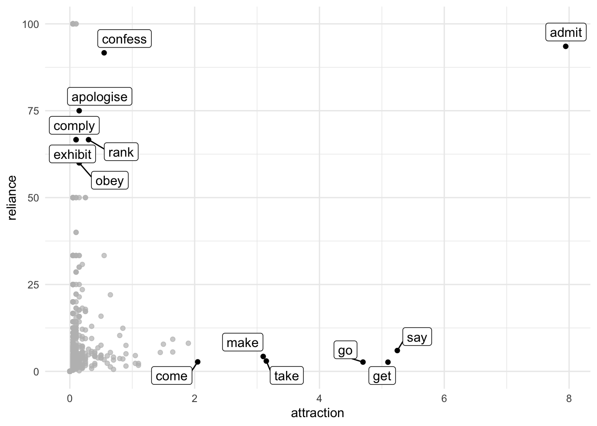

a <- 11
b <- 1
c <- 1990
d <- 62114
confess <- c(a, b)
notconfess <- c(c, d)
must.table <- rbind(confess, notconfess)
colnames(must.table) <- c("must", "notmust")
must.table must notmust
confess 11 1
notconfess 1990 62114
In this post I look at the family of collexeme analysis methods originated by Gries and Stefanowitsch. Since they use a lot of Base R, and love using vectors, there is a hurdle that needs to be conquered if you are used to the rectangles in tidy data. I first give an overview of what the method tries to do, and then at the end show the hurdle in detail, followed by the steps necessary to enable the computation of the desired variables and statistical tests (association measures). Basically, you need to convert from pure tidy data to a tidy contingency format.
So in order to finalize my database on Chinese ideophones, creatively entitled CHIDEOD, I decided to work through Stefan Gries’s Quantitative corpus linguistics with R (2016; 2nd edition; companion website here).
That together with Natalia Levshina’s How to do linguistics with R (2015; 1st edition; companion website here), which I worked through last June, has given me a lot of inspiration to tackle a number issues I have been struggling with, or at least thinking about without really knowing how to tackle them — I guess that counts as struggling with. By the way, it is locally kind of confirmed currently that Levshina will be a keynote speaker at our CLDC conference in May. So you can already prepare those abstracts if you wish to attempt to present here in Taipei.
Anyway, one of the more intriguing family of methods to investigate the relation between constructions and words that fill the slots is the family of collexeme analysis.
As Gries (2019) discusses, the methodology of collexeme analysis is an extension of the notions of a) collocation (which words really belong together, e.g. watch TV and watch a movie will have a stronger collocational bond than watch a powerpoint presentation, although the latter has become a weekly activity), and b) colligation (what constructions belong together, e.g. watch will typically be followed by a noun, although verb phrases like watch him play also occur).
So the basis of this method is a contingency table (or cross-table; or kruistabel if you love Dutch; lièlián biǎo 列聯表 in Chinese (apparently)). Basically, something like this, that should look somewhat familiar:
| Element 2 | Not element 2 / other elements | Sum | |
|---|---|---|---|
| Element 1 | a | b | a + b |
| Not element 1 / other elements | c | d | c + d |
| Sum | a + c | b + d | a + b + c + d |
These letters (a, b, c, d) play an important role in colloxeme analyses. So stay tuned for that.
So what Stefanowitsch & Gries (2003) wanted to investigate was the [N waiting to happen] construction, e.g. an accident waiting to happen, a disaster waiting to happen etc. In this collexeme analysis you are quantifying to what degree the words found in a corpus occur in that construction: are they attracted or repulsed, and by how much?
In this scenario, element 1 is e.g. an accident, and element 2 the construction waiting to happen.
| waiting to happen | not waiting to happen | Sum | |
|---|---|---|---|
| an accident | a | b | a + b |
| not an accident | c | d | c + d |
| Sum | a + c | b + d | a + b + c + d |
A year later, Gries & Stefanowitsch (2004) extended the methodology to quantify to what degree the words prefer to appear in one of two constructions. For example, the ditransitive give him a call vs. the prepositional give a call to him. Here the table changes into:
| ditransitive | prepositional | Sum | |
|---|---|---|---|
| give | a | b | a + b |
| not give | c | d | c + d |
| Sum | a + c | b + d | a + b + c + d |
The third seminal paper was published in the same year (Gries & Stefanowitsch 2004; ISBN: 9781575864648) sought to quantify the attraction / repulsion between two different slots in a construction, e.g. trick … into buying, force … into accepting etc. For this, the table is adapted to:
| accepting | not accepting | Sum | |
|---|---|---|---|
| force | a | b | a + b |
| not force | c | d | c + d |
| Sum | a + c | b + d | a + b + c + d |
Let’s say you were able to get the frequencies from a corpus – I should probably mention that, *cough* *cough* not everybody agrees with this kind of contingency tables, the overview paper by Gries (2019) has plenty of interesting references and exciting rebuttals – and you have this table, possibly for lots of elements and/or constructions.
We’ll keep an example here that I calculated with Gries’s (2016) book mentioned above. One of the case studies looks at verbs that co-occur with the modal verb must, e.g. must accept, must agree, must confess, vs. how much these verbs occur with other modal verbs, e.g should accept, should agree etc. So in this case, element 1 was a verb (confess) and element 2 was must; not-element-1 were all the other verbs, and not-element-2 were all the other modal verbs.
The respective table from an abstract level looks like this:
| must | not must | Sum | |
|---|---|---|---|
| confess | a | b | a + b |
| not confess | c | d | c + d |
| Sum | a + c | b + d | a + b + c + d |
I got these frequencies from the BNC (as Gries shows in his book, but I used my tidyverse skillsTM to get them, so if they are slightly off, then it was because of not following his script completely):
| must | not must | Sum | |
|---|---|---|---|
| confess | 11 | 1 | 12 |
| not confess | 1990 | 62114 | 64104 |
| Sum | 2001 | 62115 | 64116 |
Or in a Base R table:
a <- 11
b <- 1
c <- 1990
d <- 62114
confess <- c(a, b)
notconfess <- c(c, d)
must.table <- rbind(confess, notconfess)
colnames(must.table) <- c("must", "notmust")
must.table must notmust
confess 11 1
notconfess 1990 62114What do you do now?
Now it’s time for letter math!
The association measure (read: statistical test) that Gries & Stefanowitsch, as well as others, have used most is the Fisher Yates Exact test, and more precisely the negative \(log10\) of its \(p\)-value. Underlying this (see the link in this paragraph) are calculations using those letter cells (a,b,c,d). Luckily we don’t need to do that manually because R has a function for this – fischer.test():
fisher.test(must.table)
Fisher's Exact Test for Count Data
data: must.table
p-value = 3.106e-16
alternative hypothesis: true odds ratio is not equal to 1
95 percent confidence interval:
49.90447 13241.49567
sample estimates:
odds ratio
344.6593 So as you can see the pvalue is 3.1056007^{-16}. If we take the negative \(log10\) of this, it becomes 15.5078544, which gives us the result we expected.
An easier way of computing the Fisher Yates Exact test of this table is by using the letter math and the pv.Fischer.collostr function provided by Levshina’s Rling package:
Rling::pv.Fisher.collostr(a, b, c, d)[1] 3.105601e-16Other tests that have been proposed are so-called Reliance and Attraction (cf. Schmid & Küchenhoff 2013 a.o.). Reliance is the relative frequency of a verb (confess) with must with regard to all uses of the given verb; Attraction is the relative frequency of a verb (confess) with must based on all usages with must.
\[ Reliance = \frac{a}{a+b}\]
\[ Attraction = \frac{a}{a+c} \]
attraction <- a / (a+c) * 100
reliance <- a / (a+b) * 100The Attraction of confess and must is 0.5497251 and the Reliance is 91.6666667. This high Reliance means that whenever confess occurs in the corpus after a modal it relies on must to occur. Its Attraction, however, has a much lower value: must does not necessarily occur with confess, in fact, it occurs with lots of other verbs as well!
The third group of tests is actually correlated to Attraction and Reliance: respectively \(\Delta P_{word \to construction}\) and \(\Delta P_{construction \to word}\) (cf. Ellis & Ferreira-Junior a.o.). They are also known as tests of cue validity and are calculated as follows:
\[\Delta P_{word \to construction} = cue_{construction} = \frac{a}{a + c} - \frac{b}{b + d}\]
\[\Delta P_{construction \to word} = cue_{verb} = \frac{a}{a + b} - \frac{c}{c + d}\]
dP.cueCx <- a/(a + c) - b/(b + d)
dP.cueVerb <- a/(a + b) - c/(c + d)So the \(\Delta P_{word \to construction}\) of must confess is 0.0054812 and the \(\Delta P_{construction \to word}\) of must confess is 0.8856234, so these numbers look a lot like those of Attraction and Reliance.
Anyway, I think you get the drift: if you have the contingency table, you choose an association measure (there are more than these three sets) and analyze the results.
So if that’s so clear, why am I writing this post? For me, the main difficulty with the approach is that Gries and Levshina love writing things in Base R (Gries even more than Levshina). But to someone who really started to appreciate R after the tidyverse became more available, there is this dissonance with the way they go about things.
One of the biggest difference is the obsessive-compulsion of tidyverse to think in rectangles, a.k.a. dataframes or tibbles, rather than the vector( letter)s that Gries and Levshina love using, especially in their letter mathematics.
As a consequence of this “rectangling” and tidy format (long and skinny), rather than contingency format (2 x 2), it is challenging to compute even basic chisquare.tests.
So in Base R, a chisquare is easy to compute, but then hard to continue working with, because this thick text block is given and you can’t really access the contents (but there are solutions, like broom::tidy):
chisq.test(must.table)Warning in chisq.test(must.table): Chi-squared approximation may be incorrect
Pearson's Chi-squared test with Yates' continuity correction
data: must.table
X-squared = 282.63, df = 1, p-value < 2.2e-16In a tidy format, you typically have to jump through a lot of hoops to either get to use the same function or use one of the newer alternative functions:
library(tidyverse)
must.tibble <- tribble(
~ verb, ~ must, ~notmust,
"confess", 11, 1,
"notconfess", 1990, 62114
)
must.tibble %>% kable()| verb | must | notmust |
|---|---|---|
| confess | 11 | 1 |
| notconfess | 1990 | 62114 |
# this function will give you bad output
# so you can't just simply do this
chisq.test(must.tibble$must, must.tibble$notmust)Warning in chisq.test(must.tibble$must, must.tibble$notmust): Chi-squared
approximation may be incorrect
Pearson's Chi-squared test with Yates' continuity correction
data: must.tibble$must and must.tibble$notmust
X-squared = 0, df = 1, p-value = 1must.tibble %>%
pivot_longer(cols = c(must, notmust),
names_to = "modal",
values_to = "n") %>% # now it is really tidy
kable()| verb | modal | n |
|---|---|---|
| confess | must | 11 |
| confess | notmust | 1 |
| notconfess | must | 1990 |
| notconfess | notmust | 62114 |
must.tibble %>%
pivot_longer(cols = c(must, notmust),
names_to = "modal",
values_to = "n") %>% # now it is really tidy
uncount(n) # uncount# A tibble: 64,116 × 2
verb modal
<chr> <chr>
1 confess must
2 confess must
3 confess must
4 confess must
5 confess must
6 confess must
7 confess must
8 confess must
9 confess must
10 confess must
# ℹ 64,106 more rowsmust.tibble %>%
pivot_longer(cols = c(must, notmust),
names_to = "modal",
values_to = "n") %>% # now it is really tidy
uncount(n) %>% # uncount
table() # turn to Base R table modal
verb must notmust
confess 11 1
notconfess 1990 62114must.tibble %>%
pivot_longer(cols = c(must, notmust),
names_to = "modal",
values_to = "n") %>% # now it is really tidy
uncount(n) %>% # uncount
table() %>% # turn to Base R table
chisq.test() Warning in chisq.test(.): Chi-squared approximation may be incorrect
Pearson's Chi-squared test with Yates' continuity correction
data: .
X-squared = 282.63, df = 1, p-value < 2.2e-16tidy with broommust.tibble %>%
pivot_longer(cols = c(must, notmust),
names_to = "modal",
values_to = "n") %>% # now it is really tidy
uncount(n) %>% # uncount
table() %>% # turn to Base R table
chisq.test()%>%
broom::tidy() %>%
kable()Warning in chisq.test(.): Chi-squared approximation may be incorrect| statistic | p.value | parameter | method |
|---|---|---|---|
| 282.6321 | 0 | 1 | Pearson’s Chi-squared test with Yates’ continuity correction |
I know there are some tidyverse-friendly functions like infer::chisq_test, but it seems to lack arguments like expected values (chisq.test()$exp). So this awkward hoop jumping is annoying but gets the job done (for now?).
Anyway, while for most summary statistics a tidy format (see hoop 1) is the easiest to work with, I don’t think it’s very intuitive for the association measures paradigm.
So in this working example of must + V_inf_ construction what I did was get all the occurrences of all modal verbs + verbs in the infinitive from the BNC corpus. The second step I did was add a column with dplyr::case_when to identify if a modal verb was must or another modal verb.
Let’s look at this data shall we:
df.must# A tibble: 64,116 × 3
modal verb mod.type
<chr> <chr> <chr>
1 can find OTHER
2 should stop OTHER
3 should recognise OTHER
4 will cost OTHER
5 might think OTHER
6 can sink OTHER
7 can change OTHER
8 must help MUST
9 ll help OTHER
10 ll take OTHER
# ℹ 64,106 more rowsAs you can see there are 64116 rows, and the table is just a count away form being tidy.
tidy.df.must <- df.must %>%
count(mod.type, verb, sort = TRUE)
tidy.df.must# A tibble: 2,522 × 3
mod.type verb n
<chr> <chr> <int>
1 OTHER get 3750
2 OTHER go 3421
3 OTHER see 2409
4 OTHER take 2056
5 OTHER like 1778
6 OTHER say 1647
7 OTHER come 1460
8 OTHER make 1383
9 OTHER give 1245
10 OTHER put 1162
# ℹ 2,512 more rowsMuch ‘prettier’, but what next? This is actually the mental step I struggled the most with, this dissonance between tidy and contingency. However, since we coded mod.type with a binary value: “OTHER” or “MUST”, it is actually trivial to dplyr::spread or dplyr::pivot_wider them to a “tidy contingency table”:
spread.tidy.df.must <- tidy.df.must %>%
pivot_wider(values_from = n,
names_from = mod.type)
spread.tidy.df.must# A tibble: 2,113 × 3
verb OTHER MUST
<chr> <int> <int>
1 get 3750 102
2 go 3421 94
3 see 2409 14
4 take 2056 63
5 like 1778 3
6 say 1647 105
7 come 1460 41
8 make 1383 62
9 give 1245 22
10 put 1162 18
# ℹ 2,103 more rowsHey, this looks a lot like those schematic tables we had at the beginning! But now the real challenge is to turn these numbers into the letters a, b, c, and d, so we can perform our letter math.
After changing all numeric values we have to doubles (instead of integers) and changing all NAs to 0, we can get the letters by following simple arithmetic from our original schematic table, e.g. if we know a and a+c, then c = a+c - a etc.
| Element 2 | Not element 2 / other elements | Sum | |
|---|---|---|---|
| Element 1 | a | b | a + b |
| Not element 1 / other elements | c | d | c + d |
| Sum | a + c | b + d | a + b + c + d |
spread.tidy.df.must %>%
mutate_if(is.numeric, ~ as.double(.x)) %>% # we'll want doubles instead of integers
mutate_if(is.numeric, ~ replace_na(.x, 0)) %>% # NAs should be 0
mutate(a = MUST,
ac = sum(MUST),
c = ac - a,
ab = MUST + OTHER,
b = ab - a,
abcd = sum(MUST, OTHER),
d = abcd - a - b -c,
aExp = (a + b)*(a + c)/(a + b + c + d)) -> abcd.must
abcd.must# A tibble: 2,113 × 11
verb OTHER MUST a ac c ab b abcd d aExp
<chr> <dbl> <dbl> <dbl> <dbl> <dbl> <dbl> <dbl> <dbl> <dbl> <dbl>
1 get 3750 102 102 2001 1899 3852 3750 64116 58365 120.
2 go 3421 94 94 2001 1907 3515 3421 64116 58694 110.
3 see 2409 14 14 2001 1987 2423 2409 64116 59706 75.6
4 take 2056 63 63 2001 1938 2119 2056 64116 60059 66.1
5 like 1778 3 3 2001 1998 1781 1778 64116 60337 55.6
6 say 1647 105 105 2001 1896 1752 1647 64116 60468 54.7
7 come 1460 41 41 2001 1960 1501 1460 64116 60655 46.8
8 make 1383 62 62 2001 1939 1445 1383 64116 60732 45.1
9 give 1245 22 22 2001 1979 1267 1245 64116 60870 39.5
10 put 1162 18 18 2001 1983 1180 1162 64116 60953 36.8
# ℹ 2,103 more rowsSo now we can easily perform all of the association measures we want, and rank them accordingly.
fye <- abcd.must %>%
mutate(fye = Rling::pv.Fisher.collostr(a, b, c, d)) %>%
#filter(verb == "confess") %>%
mutate(negfye = case_when(a < aExp ~ format(round(log10(fye)), nsmall = 2),
TRUE ~ format(round(- log10(fye)), nsmall = 2)),
negfye = as.double(negfye)) %>% #I did some rounding
arrange(desc(negfye)) %>%
select(verb, OTHER, MUST, fye, negfye)
fye %>% top_n(20) %>% kable()| verb | OTHER | MUST | fye | negfye |
|---|---|---|---|---|
| admit | 11 | 159 | 0.0000000 | 225 |
| confess | 1 | 11 | 0.0000000 | 16 |
| say | 1647 | 105 | 0.0000000 | 9 |
| realise | 22 | 11 | 0.0000000 | 9 |
| recognise | 46 | 13 | 0.0000000 | 8 |
| know | 432 | 38 | 0.0000001 | 7 |
| remember | 324 | 33 | 0.0000000 | 7 |
| rank | 3 | 6 | 0.0000001 | 7 |
| decide | 120 | 17 | 0.0000014 | 6 |
| pay | 354 | 30 | 0.0000052 | 5 |
| wait | 139 | 16 | 0.0000307 | 5 |
| ensure | 53 | 10 | 0.0000243 | 5 |
| inform | 5 | 5 | 0.0000065 | 5 |
| stress | 5 | 5 | 0.0000065 | 5 |
| apologise | 1 | 3 | 0.0001186 | 4 |
| obey | 2 | 3 | 0.0002895 | 4 |
| look | 560 | 33 | 0.0017845 | 3 |
| feel | 223 | 18 | 0.0006318 | 3 |
| act | 47 | 7 | 0.0014017 | 3 |
| assume | 24 | 5 | 0.0018726 | 3 |
| reflect | 24 | 5 | 0.0018726 | 3 |
| mention | 23 | 5 | 0.0015902 | 3 |
| emerge | 13 | 4 | 0.0016252 | 3 |
| own | 9 | 4 | 0.0005395 | 3 |
| emphasise | 7 | 3 | 0.0030892 | 3 |
| register | 7 | 3 | 0.0030892 | 3 |
| balance | 6 | 3 | 0.0022137 | 3 |
| realize | 6 | 3 | 0.0022137 | 3 |
| respect | 3 | 3 | 0.0005656 | 3 |
| comply | 1 | 2 | 0.0028599 | 3 |
| exhibit | 1 | 2 | 0.0028599 | 3 |
| export | 0 | 2 | 0.0009735 | 3 |
| outperform | 0 | 2 | 0.0009735 | 3 |
fye %>% arrange(negfye) %>% top_n(-20) %>% kable()| verb | OTHER | MUST | fye | negfye |
|---|---|---|---|---|
| like | 1778 | 3 | 0.0000000 | -20 |
| see | 2409 | 14 | 0.0000000 | -18 |
| hear | 428 | 0 | 0.0000021 | -6 |
| help | 820 | 7 | 0.0000185 | -5 |
| want | 401 | 0 | 0.0000074 | -5 |
| tell | 985 | 13 | 0.0003130 | -4 |
| give | 1245 | 22 | 0.0031496 | -3 |
| put | 1162 | 18 | 0.0006828 | -3 |
| need | 461 | 4 | 0.0018961 | -3 |
| lead | 321 | 1 | 0.0009838 | -3 |
| imagine | 290 | 1 | 0.0019299 | -3 |
| call | 268 | 0 | 0.0003216 | -3 |
| cause | 211 | 0 | 0.0022792 | -3 |
| buy | 402 | 4 | 0.0090712 | -2 |
| play | 340 | 4 | 0.0291563 | -2 |
| happen | 335 | 2 | 0.0039267 | -2 |
| afford | 205 | 0 | 0.0035887 | -2 |
| receive | 205 | 1 | 0.0242516 | -2 |
| pick | 203 | 1 | 0.0239273 | -2 |
| appear | 187 | 0 | 0.0049951 | -2 |
| benefit | 147 | 0 | 0.0160195 | -2 |
abcd.must %>%
mutate(attraction = a / (a+c) * 100,
reliance = a / (a+b) * 100) %>%
arrange(desc(attraction)) %>%
top_n(20) %>%
select(verb, OTHER, MUST, attraction, reliance) %>%
kable()Selecting by reliance| verb | OTHER | MUST | attraction | reliance |
|---|---|---|---|---|
| export | 0 | 2 | 0.099950 | 100 |
| outperform | 0 | 2 | 0.099950 | 100 |
| acquaint | 0 | 1 | 0.049975 | 100 |
| capitalise | 0 | 1 | 0.049975 | 100 |
| capitulate | 0 | 1 | 0.049975 | 100 |
| class | 0 | 1 | 0.049975 | 100 |
| combat | 0 | 1 | 0.049975 | 100 |
| comfort | 0 | 1 | 0.049975 | 100 |
| discard | 0 | 1 | 0.049975 | 100 |
| dissociate | 0 | 1 | 0.049975 | 100 |
| dread | 0 | 1 | 0.049975 | 100 |
| enclose | 0 | 1 | 0.049975 | 100 |
| graft | 0 | 1 | 0.049975 | 100 |
| interrogate | 0 | 1 | 0.049975 | 100 |
| itch | 0 | 1 | 0.049975 | 100 |
| nurture | 0 | 1 | 0.049975 | 100 |
| plagiarise | 0 | 1 | 0.049975 | 100 |
| protrude | 0 | 1 | 0.049975 | 100 |
| rediscover | 0 | 1 | 0.049975 | 100 |
| redouble | 0 | 1 | 0.049975 | 100 |
| shoulder | 0 | 1 | 0.049975 | 100 |
| shrive | 0 | 1 | 0.049975 | 100 |
| stipulate | 0 | 1 | 0.049975 | 100 |
abcd.must %>%
mutate(dP.cueCx = a/(a + c) - b/(b + d),
dP.cueVerb = a/(a + b) - c/(c + d)) %>%
arrange(desc(dP.cueCx)) %>%
select(verb, OTHER, MUST, dP.cueCx, dP.cueVerb) %>%
top_n(20) %>%
kable()| verb | OTHER | MUST | dP.cueCx | dP.cueVerb |
|---|---|---|---|---|
| export | 0 | 2 | 0.0009995 | 0.9688212 |
| outperform | 0 | 2 | 0.0009995 | 0.9688212 |
| acquaint | 0 | 1 | 0.0004998 | 0.9688061 |
| capitalise | 0 | 1 | 0.0004998 | 0.9688061 |
| capitulate | 0 | 1 | 0.0004998 | 0.9688061 |
| class | 0 | 1 | 0.0004998 | 0.9688061 |
| combat | 0 | 1 | 0.0004998 | 0.9688061 |
| comfort | 0 | 1 | 0.0004998 | 0.9688061 |
| discard | 0 | 1 | 0.0004998 | 0.9688061 |
| dissociate | 0 | 1 | 0.0004998 | 0.9688061 |
| dread | 0 | 1 | 0.0004998 | 0.9688061 |
| enclose | 0 | 1 | 0.0004998 | 0.9688061 |
| graft | 0 | 1 | 0.0004998 | 0.9688061 |
| interrogate | 0 | 1 | 0.0004998 | 0.9688061 |
| itch | 0 | 1 | 0.0004998 | 0.9688061 |
| nurture | 0 | 1 | 0.0004998 | 0.9688061 |
| plagiarise | 0 | 1 | 0.0004998 | 0.9688061 |
| protrude | 0 | 1 | 0.0004998 | 0.9688061 |
| rediscover | 0 | 1 | 0.0004998 | 0.9688061 |
| redouble | 0 | 1 | 0.0004998 | 0.9688061 |
| shoulder | 0 | 1 | 0.0004998 | 0.9688061 |
| shrive | 0 | 1 | 0.0004998 | 0.9688061 |
| stipulate | 0 | 1 | 0.0004998 | 0.9688061 |
It is perfectly possible to perform association measures starting with a tidy dataframe. First you need to spread out with a binary variable, to make it a tidy contingency table. Then you can identify a, b, c, and d. Next you can chooose your preferred statistical test, rank verbs, and try to interpret the findings.
I should probably also mention that Gries is has been advocating to not just use one association measure, but three or more. Using just two, you can plot like Attraction and Reliance.
abcd.must %>%
mutate(attraction = a / (a+c) * 100,
reliance = a / (a+b) * 100) %>%
arrange(desc(attraction)) %>%
select(verb, OTHER, MUST, attraction, reliance) %>%
ggplot(aes(x = attraction,
y = reliance)) +
geom_point() +
gghighlight::gghighlight(attraction > 2 | 50 < reliance & reliance < 100,
label_key = verb) +
theme_minimal()